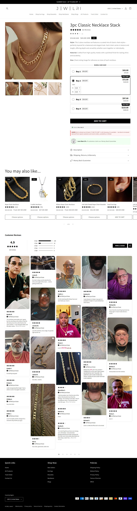

Fonte: coleção de best sellers.
Mediana do catálogo: $37.0 · faixa $19.0 a $57.0
| # | Produto | Preço |
|---|---|---|
| 1 | 3pc Classic Necklace Stack | $43.0 |
| 2 | 7pc Gold Beaded Bracelet Stack | $37.0 |
| 3 | Paperclip Necklace & Bracelet Set | $46.0 |
| 4 | 16pc Classic Bracelet Stack | $43.0 |
| Criativos únicos (amostra de 50 mais recentes) | 3 |
| Fator de duplicação | 16.7x (mesmo criativo repetido) |
| Anúncios por dia | 2.4/dia · ~16.8/semana |
| Criativos únicos por semana | 1.0 |
| Janela da amostra | 20.53 dias |
| Mix de formato e sofisticação | Estático dominante, 1 ângulo em muitas imagens. Sofisticação baixa (nível 1): o que vende é a mensagem de causa, não a produção. |
Sinal de "vencedor" = longevidade + nº de cópias + sobrevivência (a Meta não expõe impressão pra e-commerce). O % exato de cada formato exige inspeção visual de cada criativo, um a um — fica declarado como lacuna; a leitura acima é qualitativa, da amostra.
1÷10,6% por construção (tautologia), não um achado.| Headline |
|---|
| "Support Veterans with Every Cross" |
| "Real 14k Gold Plated. No Green Skin." |
| "Limited Time Sale" |
O que faz o campeão vender, decodificado dos criativos e da PDP: é isto que se copia, não o número de anúncios.
| Big idea / ângulo | Apoie veteranos a cada cruz que você compra. |
| Mecanismo único | Causa embutida (parte da compra vira doação). Transforma desconto em propósito e dá justificativa moral que blinda o preço. |
| Formato de hook | "Support Veterans with Every Cross" — causa na primeira linha, não produto. |
| Estrutura do presell | Catálogo com a objeção de qualidade pré-quebrada ("Real 14k Gold Plated. No Green Skin."). |
| Objeção principal | "Joia folheada esverdeia o dedo." Respondida direto no ângulo: "Real 14k Gold Plated. No Green Skin." |
O que copiar de cada página, com o link pra abrir e estudar.
| Home — o que modelar | Causa em destaque ("Support Veterans"), com a doação como justificativa moral, e "No Green Skin" atacando a objeção. 🏬 abrir home ↗ |
| PDP — o que modelar | PDP com a causa reforçada e o selo "Real 14k Gold Plated". Modele a mensagem de propósito acima do desconto. 🛍️ abrir PDP do campeão ↗ |
Widget detectado: —. Ele não expõe o aggregateRating no HTML da página, então a contagem pública não saiu por raspagem.
Transparência sobre os limites desta ficha. Cada linha mostra o que faltou, por quê, e o que foi tentado.
| Dado | Motivo | Método tentado |
|---|---|---|
| Contagem de reviews | widget não expõe aggregateRating no HTML | JSON-LD e widgets (Loox/Judge.me/Okendo). Apps detectados: nenhum widget detectado. A contagem só sai inspecionando a chamada XHR da PDP com navegador logado. |
| Pixel ID da Meta | não encontrado no HTML da home | Regex no HTML. O pixel é carregado via GTM ou via Customer Events do Shopify, que não expõe o ID no fonte. |
| Redes sociais | nenhum perfil linkado no site | Varredura de links do rodapé. A ausência é dado: indica operação 100% tráfego pago. |
| Eixo | Pontos | Por quê |
|---|---|---|
| Sourcing simples | 1/2 | catálogo de 250 SKUs |
| Ticket fecha sem escada | 1/2 | ângulo de causa sem escada explícita |
| Criativo simples de produzir | 2/2 | estático, 1 ângulo duplicado 16x |
| Mecanismo com urgência | 1/2 | causa (veteranos) não tem data |
| Investimento de entrada baixo | 2/2 | ticket baixo |
| Sem dependência de autoridade | 2/2 | ângulo de causa é replicável |
Nível é etiqueta de "pra quem serve", não nota de corte: 10-12 iniciante, 6-9 médio, 0-5 avançado. Toda oportunidade de dropshipping vale, muda só o perfil de operador.
Unica operacao do nicho que junta fe com CAUSA. Cada compra apoia veteranos, o que adiciona justificativa moral a compra e diferencia num mar de "buy one get one". Duplicacao altissima (16,7x na amostra): um unico angulo campeao rodado em dezenas de variacoes de imagem. Catalogo de 250 produtos (teto do endpoint), ticket de $37 e Triple Whale.